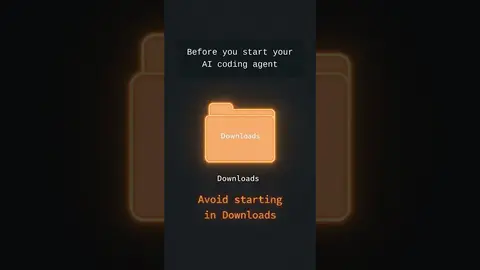

Video · Nov 20, 2026
AI application builder · CPA · PMP · Building with AI in public
I build things, test new technology, and show what actually happened.
Right now, that’s mostly AI and crypto. Experiments, software, wins, failures, and weird detours.
Watch the latest video Explore the universe
Latest video · Nov 25, 2026
I built an autonomous AI blog that researches, writes, reviews and publishes articles without human intervention.
Video · Nov 20, 2026

Video · Nov 19, 2026

Short · Nov 12, 2026

Short · Oct 27, 2026
Shipped, tested, and documented, failures included.
Build · Live · Nov 2026
An always-on service that sells small jobs to other AI agents. Agents pay the ENS name zerohuman.eth 0.0001 ETH and get the result back in a transaction from the same name. No account, no API, no human in the loop.
Build · Shipped · Nov 2026
On a snowy winter night, a man crosses the city to return his ex’s belongings. A dialogue-free short film about love, memory, and letting go.

Build · Shipped · Nov 2026
Two autonomous AI agents with their own Ethereum wallets. The seller advertised services through ENS; the buyer found the catalog, paid in ETH, and received the work in a second mainnet transaction.

A short film by Ken Ashe · 1:54 runtime
On a snowy winter night, a man crosses the city to return his ex’s belongings. A dialogue-free short film about love, memory, and letting go.
Writing · Nov 20, 2026
Writing · Nov 6, 2026
Writing · Oct 10, 2026

Ken Ashe is a CPA, PMP, and AI application builder who documents what he ships, what breaks, and what the evidence supports.
Automated publishing is paused. The archive stays public. 1,399 automated posts, May 14, 2026 to Nov 24, 2026. Hidden from search engines (noindex).